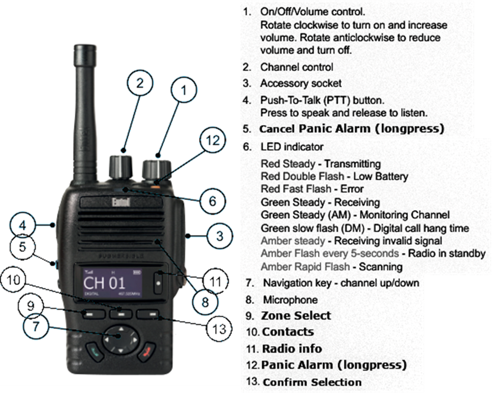
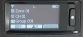

Entel DX 485 Guide

Introduction
The Entel DX485 is an advanced radio suitable for professional users, featuring a digital display and incorporating per-group and per-radio calling functions as well as man-down (additional cost) and lone-worker emergency systems.
The included radios have been programmed as a custom fleet, involving sub-groups and individually addressed radios - it is important to understand the concepts written in ALLCAPS to get the most out of your fleet.
Zones
A minimal setup includes a single ZONE.
Each Zone includes lists of: CHANNELS, TX CONTACTS, RX GROUPLISTS, EMERGENCY SYSTEMS
Which are each available to be allocated per CHANNEL.
Multiple ZONES can be useful for complex and multi-site setups, allowing users to switch between different configurations.
Multiple ZONES may also be implemented to keep track of multiple GROUPLIST setups and ensure consistency in the programming stage, in which case each radio will be allocated a single ZONE.
Channels
Each radio is programmed with the same 16 basic CHANNELS , defined by the frequency they transmit on and a ‘colour code’ mask to further subdivide each frequency.
For users to communicate they must be tuned to the same CHANNEL - irrespective of any other group or individual calling settings.
Contacts - TX (Transmit)
CONTACTS are INDIVIDUALS and TALKGROUPS that can be called from a radio.
The list of TALKGROUPS will usually include an ALL group (sometimes ‘Group 001’) as the default CONTACT so that in normal usage the radios operate identically to analogue radios, i.e. any user tuned to the same channel as the caller will receive the transmission.
If a CONTACT other than ALL is selected for an outbound call, then only the INDIVIDUAL or TALKGROUP which has been selected will receive the call, and only if they are tuned to the same channel as the sender.
GROUPLIST - RX (Receive)
GROUPLISTS contain one or more TALKGROUPS.
Each radio will listen for calls addressed to them as an INDIVIDUAL as well as to TALKGROUPS which are included in the GROUPLIST allocated to the currently selected ZONE.
For example, a user in the ADMIN group would need to have a GROUPLIST which includes both the ALL TALKGROUP (to listen for calls to all users) as well as the ADMIN TALKGROUP (to listen for calls to the ADMIN TALKGROUP )
Using Entel DX485 RADIOS
Dx485s set to ‘advanced’ UI Mode display the following:

Selected Z ONE
Selected CHANNEL
Selected CONTACT
HOW TO:
Identify this radio:
Press ‘Radio Info’ (#11) to display information about the radio including username and numeric ID
Make a Call:
Press ‘PTT’ (#4) to call the currently selected CONTACT (displayed at bottom of screen)
Call a specific CONTACT:
Press ‘Contacts’ (#10)
Use arrow keys to select a specific INDIVIDUAL or** TALKGROUP**
EITHER : Press ‘PTT’ (#4) to make a single call to this CONTACT
OR : Press ‘Confirm Selection’ (#13) to select the CONTACT and return to main menu (remembering to move back to ALL when finished)
Panic Alarm:
Our standard programming assigns long-press of the orange button on top of the radio (#12) to ‘Emergency On’. Holding this key for a few seconds will cause all radios on the same channel as the user to begin emitting an alarm sound, and flashing the username that initiated the alarm-call. Long-pressing the blue side button (#5) will cancel the sound, however each user must individually acknowledge the alarm to return their unit to normal.
Man Down:
(requires hardware upgrade from standard radio) If the radio tilts beyond 45 degrees from vertical for specified length of time it will begin to beep. The user has a set number of seconds to set the radio upright or else panic alarm is sent to all users.
Lone Worker:
If the radio is not used (meaning a button is pressed) for the specified time it begins to beep. User must press any button to silence the beeping, or else after specified time a panic alarm is sent to all radios on same channel. At present time we are unable to permanently disable loneworker. If you have not requested it, we have likely set it to wait the maximum 255 minutes before alerting the user, and then the maximum 255 seconds before sounding the alarm.